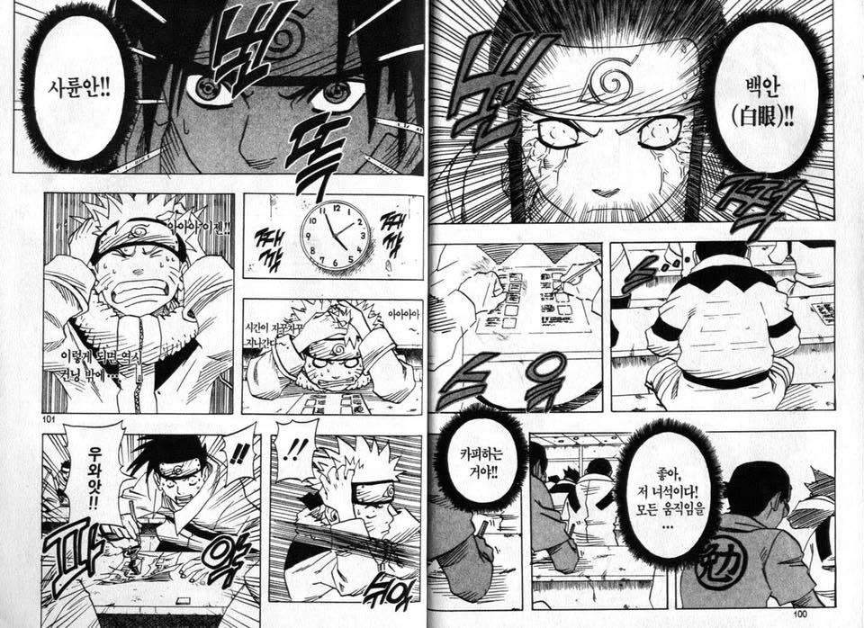
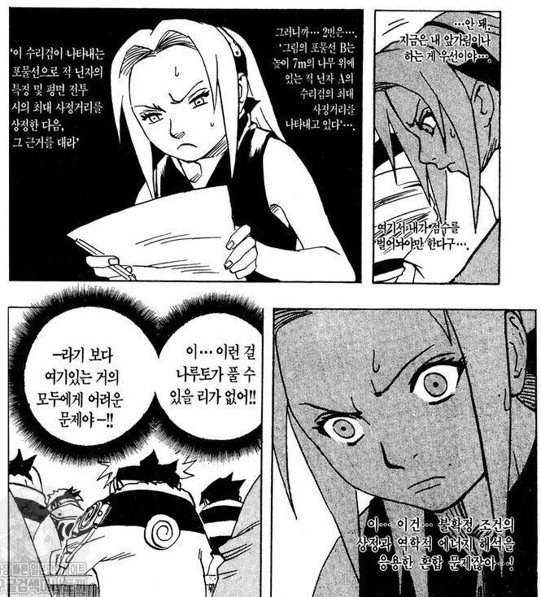

인성을 빻앗으나
1. 대눈깔 닌자 시대에 본인 순수 지능으로 문제를 품
2. 나루토 = 구미, 사스케 = 우치하 혈통 및 마수 빨로 성장
사쿠라 = 순수 노력으로 츠나데 버금가는 전투 및 서폿 닌자
3. 처음부터 끝까지 사스케만을 보는 순애


인성을 빻앗으나
1. 대눈깔 닌자 시대에 본인 순수 지능으로 문제를 품
2. 나루토 = 구미, 사스케 = 우치하 혈통 및 마수 빨로 성장
사쿠라 = 순수 노력으로 츠나데 버금가는 전투 및 서폿 닌자
3. 처음부터 끝까지 사스케만을 보는 순애
사쿠라여
사쿠라네?
사스케를 많이 닮았다고 치자
사쿠라급 의료닌자 필요한가
선인모드 딸깍으로 치료하더만
나루토 세계관에서 선술 쓸수있는 사람이 한손에 꼽히니까
그거 자힐만 함
아닌데 나루토 선술로 카카시 눈깔도 만들어주고 가이 심폐소생술도 딸깍 해줌ㅋㅋㅋ
마을의 일원들이 나루토의 그림자분신으호 하나씩 교체된거임. 카카시도 가이도 사실은 나루토의 분신이라서 자힐 가능하다는거
그림자분신 하니까 생각난건데
에로변신술 쓴 나루토 분신에 나루토가 질싸하면
임신할까? 이럴 경우 유전적으로 본인과 동일할까?
동기중에 유일하게 혈통도 없음
젖통도
하자가 크네
이노한테 가슴도 없다고 한마디 듣고 개빡쳐하던거 생각나네
그리고 조이는 힘이 장난 아님
번호
스사노오 쥬지도 함락
그러고보니 순수 자기 능력만으로 공부 잘하고 근력 최강이고 차크라 양도 많다니 록리 상위호환이었네
차크라가 많지는않음
마빡에 주기적으로 적립해둔거지
'그녀석, 양친 없잖아?ㅋ'
혈통빨 없이 순수 지능과 피지컬로 호카게급까지 성장함
근데 옆에 두 명이 혈통에 전생까지 가진 개미친놈들
거기다 인체구조 마스터한 의료닌자잖아
호카게는 사실 사쿠라가 되야했네
근데 젖도작고 인성도 작음
그러고보니 최소 츠나데 급은 될텐데 얘도 전설의 3닌급은 된다는거잖아
작중 평가가 나루토(인주력), 사스케(우치하)보다도 차크라 활용능력이 좋음.
회춘하는데 차크라 낭비 안 해서 츠나데보다 강하다더라
그런데 백안, 사륜안으로 컨닝한 대상들은
저거 어떻게 풀었음?
오답 컨닝하면 오답이잖아
중간중간 정답을 아는 사람이 있음
애초에 안들키게 컨닝하는게 시험의 내용임 답아는 사람들이 심어져있음
둘인가 일부러 정답자 배치함
얘도 나름 특이한게 내면의 자아인지 본성인지가 존나 세서
빙의하는 비전인술도 거의 안통함.
개그성 설정이지만 나름 실전에서도 써먹고
나름 좋은 캐릭터성이었는데.
주변에 동료들이 고금제일급 닌자라 그렇지 얘도 사실 시대만 잘 타고났으면 천하제일급 닌자긴 함 ㅋㅋㅋㅋㅋㅋㅋ
사쿠라 뷰지에 사스케 쥬지가 들어가 피스톤 운동을 하고 자궁 안에다 정액을 쭉 싸서 임신시켰을거 생각하니
꼴리네
저년은 진짜 보는내내 암덩어리라서 희화하면안됌 칵퉤
사륜안은 몰라도 백안 같은건 좀 잡지 ㅋㅋㅋㅋ
근데 왜 딸내미는 다르게 생겨먹었어